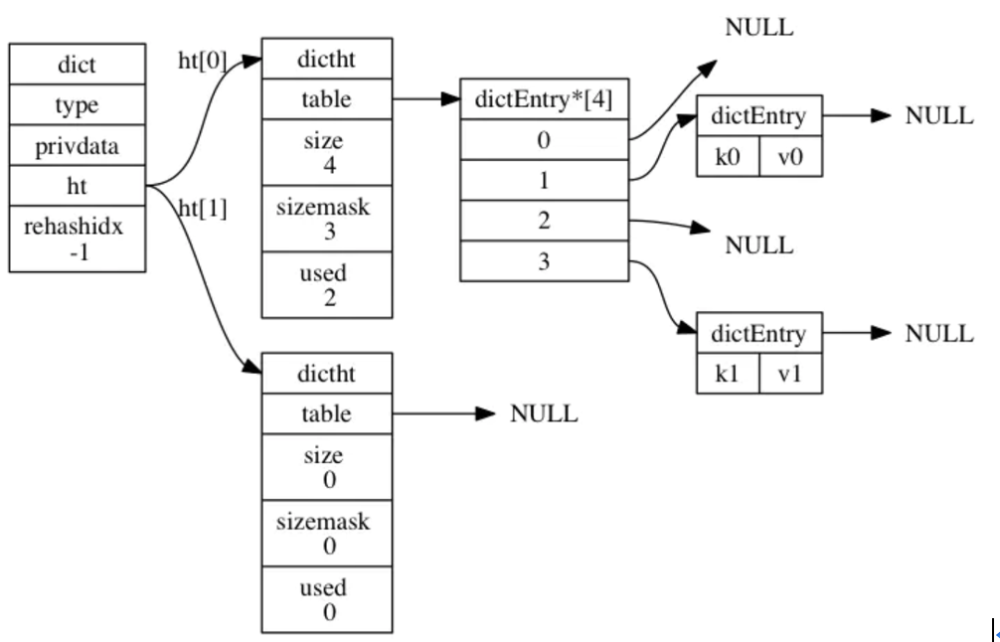
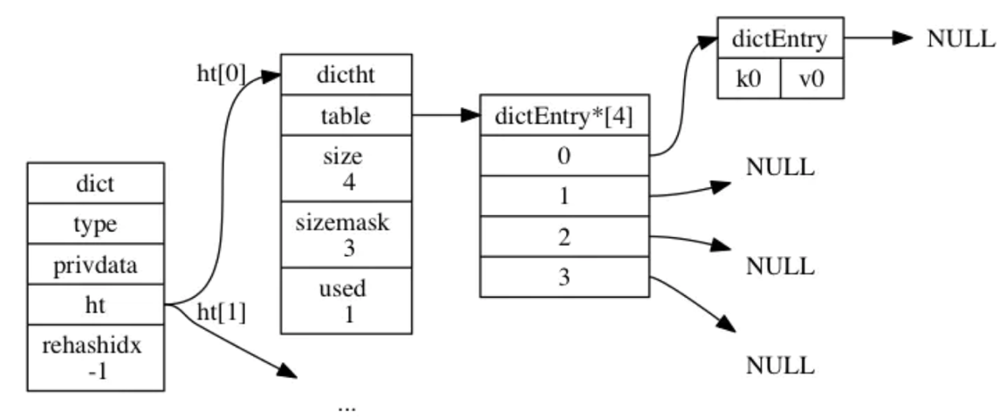
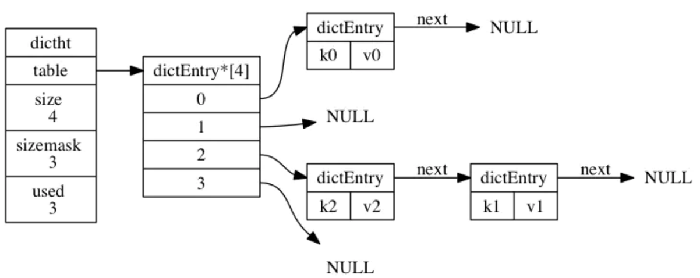
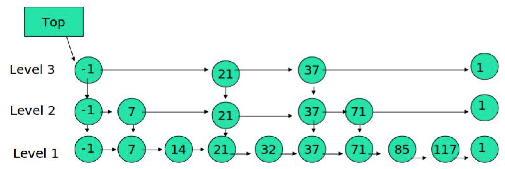

Redis基础
Redis是速度非常快的非关系型（NoSQL）内存键值数据库，可以存储键和五种不同类型的值之间的映射。键的类型只能为字符串，值支持五种数据类型：字符串String、列表List、集合Set、散列表Hash、有序集合ZSet。
Redis支持很多特性，例如将内存中的数据持久化到硬盘中，使用复制来扩展读性能，使用分片来扩展写性能。
支持数据类型
字符串String、列表List、集合Set、散列表Hash、有序集合Zset。
| 数据类型 | 可存储的值 | 操作 |
|---|---|---|
| String | 字符串、整数、浮点数 | 对整个字符串或者字符串的其中一部分执行操作getbit\setbit 对整数和浮点数执行自增incr或者自减操作decr |
| List | 列表，有序，元素可重复，可用作队列 | 从两端压入或者弹出元素 对单个或者多个元素进行修剪，只保留一个范围内的元素 |
| Set | 无序，元素唯一不可重复，可用于去重 （set 是数学上集合的概念，集合三要素：确定性，互异性，无序性） | 添加、获取、移除单个元素 检查一个元素是否存在于集合中 计算交集、并集、差集 从集合里面随机获取元素 |
| Hash | 包含键值对的无序散列表 | 添加、获取、移除单个键值对 获取所有键值对 检查某个键是否存在 |
| ZSet | 有序集合 | 添加、获取、删除元素 根据分值范围或者成员来获取元素 计算一个键的排名 |
数据结构
字典
在Redis中，Redis数据库就是使用字典来作为底层实现的，除了用来表示数据库之外，字典还是哈希键的底层实现之一。
基础数据结构
typedef struct dictEntry {
void *key;
union {
void *val;
uint64_t u64;
int64_t s64;
double d;
} v;
struct dictEntry *next;
} dictEntry;
typedef struct dictht {
dictEntry **table;
unsigned long size;
unsigned long sizemask;
unsigned long used;
} dictht;
typedef struct dict {
dictType *type;
void *privdata;
dictht ht[2];
long rehashidx; /* rehashing not in progress if rehashidx == -1 */
unsigned long iterators; /* number of iterators currently running */
} dict;
哈希表节点dictEntry，每个dictEntry结构都保存一个键值对
- key保存键值对中的键
- v保存键值对中的值，其中键值对中的值可以是一个指针，或者是一个整数
- next是指向另一个哈希表节点的指针，这个指针可以将多个哈希值相同的键值对连接在一起，来解决键冲突问题（以链表的方式解决冲突问题）
哈希表dictht，是一个散列表结构，使用拉链法解决哈希冲突
- table：是一个数组，数组中的每个元素都指向一个dictEntry结构的指针，每个dictEntry结构保存着一个键值对
- size：记录了哈希表的大小，即table数组的大小
- sizemask：值总是等于size-1，这个属性和哈希值一起决定一个键应该被放到table数组的哪个索引上
- used：记录了哈希表目前已有键值对的数量
字典dict
- type和privdata是针对不同类型的键值对创建多态字典而设置的
- type是一个指向dictType结构的指针，每个dictType结构保存了一组用于操作特定类型键值对的函数，Redis会为用途不同的字典设置不同类型的特定函数
- privadata保存了需要传给那些类型特定函数的可选参数
- ht是一个包含了两个项的数组，数组中每个项都是一个dictht哈希表，一般情况下，字典只使用ht[0]哈希表，而ht[1]哈希表只对ht[0]哈希表进行rehash时使用
- rehashidx与rehash有关，它积累了rehash目前的进度，如果没有进行rehash，则它的值为-1

hash算法
添加键值对<k0,v0>的过程：
- 1、首先程序会先使用语句
hash = dict->type->hashFunction(k0);计算得出k0的哈希值 - 2、假设计算出的哈希值为8，则程序继续
index = hash & dict->ht[0].sizemask = 8 & 3 = 0;计算得到k0的索引值为0，这表示包含这个键值对的节点应该放置到哈希表数组的索引0位置上

键冲突
Redis哈希表使用拉链法来解决键冲突，每个哈希表节点都有一个next指针，多个哈希表节点可以用next构成一个单向链表，被分配到同一个索引上的节点可以用这个单向链表连接起来，从而解决键冲突问题。
另外因为dictEntry节点组成的链表没有指向链表表尾的指针，为了考虑速度，程序总是将新节点添加到链表的表头位置（这样添加节点的时间复杂度为O(1)）。

rehash
随着操作的不断进行，哈希表保存的键值对会逐渐增多或减少，为了让哈希表负载因子维持在一个合理范围之内，当哈希表保存的键值对太多或太少时，程序要对哈希表的大小进行相应的扩展或收缩。
Redis对字典的哈希表执行rehash的步骤如下：
- 1、为字典的ht[1]哈希表分配空间，这个空间大小取决于要执行的操作：如果执行的是扩展操作，则ht[1]的大小为第一个大于等于
ht[0].used*2的2^n；如果执行的收缩操作，则ht[1]的大小为第一个大于等于ht[0].used的2^n。扩展时扩used的2倍，然后向2^n取值；收缩是当前used向上2^n取值。保证table的大小是2^n次方。 - 2、将保存在ht[0]中的所有键值对rehash到ht[1]上面：rehash指的是重新计算键的哈希值和索引值，然后将键值对放置到ht[1]的指定位置上。
- 3、当ht[0]包含的所有键值对都迁移到ht[1]之后，释放ht[0]，将ht[1]设置为ht[0]，并在ht[1]新创建一个空白哈希表，为下一次rehash做准备。
哈希表的扩展与收缩条件：
- 1、服务器目前没有执行BGSAVE或BGREWRITEAOF命令，并且哈希表负载因子大于等于1
- 2、服务器正在执行BGSAVE或BGREWRITEAOF命令，并且哈希表负载因子大于等于5
区分这两种情况的目的在于，因为执行BGSAVE与BGREWRITEAOF过程中，Redis都需要创建子进程，而大多数操作系统都采用写时复制技术来优化子进程使用效率，所以在子进程存在期间，服务器会提高执行扩展操作所需的负载因子，从而尽可能避免在子进程存在期间进行哈希表扩展操作，这可以避免不必要的内存写入，最大限度的节约空间。
- 3、当哈希表负载因子小于0.1时，程序自动开始对哈希表执行收缩操作。
渐进式rehash
Redis中的rehash动作并不是一次性、集中式完成的，而是分多次、渐进式的完成的。这样做的目的是，如果服务器中包含很多键值对，要一次性的将这些键值对全部rehash到ht[1]的话，庞大的计算量可能导致服务器在一段时间内停止服务。为了避免这种影响，Redis采用了渐进式rehash：
- 1、为ht[1]分配空间，让字典同时持有ht[0]和ht[1]两个哈希表
- 2、在字典中维持一个索引计数器变量rehashidx，并将它置为0，表示rehash工作开始
- 3、在rehash进行期间，每次对字典执行添加、删除、查找或者更新操作时，程序除了执行指定操作以外，还会顺带将ht[0]哈希表在rehashidx索引上的所有键值对rehash到ht[1]中，当rehash工作完成之后，程序将rehashidx属性的值+1
- 4、随着字典操作的不断进行，最终在某个时间点上，ht[0]的所有键值对都被rehash到ht[1]上，这时将rehashidx属性设为-1，表示rehash完成
渐进式rehash的好处在于其采取分而治之的方式，将rehash键值对所需要的计算工作均摊到字典的每个添加、删除、查找和更新操作上，从而避免了集中式rehash而带来的庞大计算量。
因为在渐进式rehash的过程中，字典会同时使用ht[0]和ht[1]两个哈希表，所以在渐进式rehash进行期间，字典的删除、查找、更新等操作都是在两个表上进行的。例如，查找操作会先在ht[0]上进行，如果没找到再在ht[1]上进行。添加操作的键值对会一律保存到ht[1]中，这一措施保证ht[0]包含的键值对只会减少不会增加。
渐进式rehash，每次有新的请求过来除了本身的操作外，都会附带做一部分rehash的操作。这样rehash的时间消耗都分摊到了多次的请求上。
- 1、每次的请求rehash哪一部分数据呢？
是由rehashindex决定，开始时rehashindex=0，标示把hash表index等0的dictEntry对应的链表数据全部rehash到h[1]
- 2、为什么不再启动一个线程去做rehash呢？
再启一个线程那么redis就成了多线程对hash表的读写，破坏了redis单线程操作的特性，需要加锁进行控制。（HashMap在多线程下rehash的过程可能会造成链表的死循环）
跳跃表
引入跳跃表的目录是为了解决单链表下顺序查找慢的问题。这个问题在HashMap中是通过转换成红黑树解决的。

Redis与Memcached的比较
两者都的非关系型内存键值数据库。不同点：
- 1、数据类型：Memcached仅支持字符串类型，而Redis支持五种不同的数据类型
- 2、数据持久化：Redis支持两种持久化策略：RDB快照和AOF日志，而Memcached不支持持久化
- 3、分布式：Memcached不支持分布式，只能通过在客户端使用一致性哈希来实现分布式存储，这种方式在存储和查询时都需要先在客户端计算一次数据所在的节点。Redis Cluster实现了分布式支持。
内存管理
Redis通过控制内存上限和回收策略实现内存管理，使用maxmemory参数限制最大可用内存，限制内存的主要目的是：用于缓存场景，当超出内存上限时使用LRU等删除策略释放空间；防止所用内存超过服务器的物理内存。
过期键删除：由于内存中保存了大量的键，维护键精准的过期删除机制会导致消耗大量的CPU，对于单线程的Redis来说成本过高，因此Redis采用惰性删除和定时任务删除机制来实现过期键的内存回收
1、惰性删除：惰性删除用于当client端读取到带有超时属性的键时，如果已经超过键设置的过期时间，会执行删除操作并返回空，该策略是出于节省CPU成本考虑，不需要单独维护TTL链表来处理过期键的删除。该方式存在内存泄漏的可能，当过期键一直没有访问将无法得到及时删除，从而导致内存不能及时释放。
2、定时任务删除：Redis内部维护一个定时任务，默认每秒运行10次，定时任务中删除过期键逻辑采用了自适应算法，根据键的过期比例，使用快慢两种速率模式回收键。
内存溢出控制策略：当Redis所用内存达到maxmemory上限时会触发相应的溢出控制策略，策略由maxmemory-policy参数控制，可以通过config set maxmemory-policy {policy} 动态设置：
| volatile-lru | 从已设置过期时间的数据集中挑选最近最少使用的数据淘汰 |
|---|---|
| volatile-ttl | 从已设置过期时间的数据集中挑选将要过期的数据淘汰 |
| volatile-random | 从已设置过期时间的数据集中任意数据淘汰 |
| allkeys-lru | 从数据集中挑选最近最少使用的数据淘汰 |
| allkeys-random | 从数据集中挑选任意选择数据淘汰 |
| no-enviction | 默认，禁止驱逐数据 |
作为内存数据库，出于对性能和内存消耗的考虑，Redis的淘汰算法实际实现上并非针对所有key，而是抽样一小部分并且从中选出被淘汰的key。使用Redis缓存数据时，为了提高缓存命中率，需要保证缓存数据都是热点数据。可以将内存最大使用量设置为热点数据占用的内存量，然后启用allkeys-lru淘汰策略，将最近最少使用的数据淘汰。
数据持久化
支持RDB和AOF两种持久化方式。
RDB持久化
将某个时间点的所有数据都存放到硬盘上，可以将快照复制到其它服务器从而创建具有相同数据的服务器副本。如果系统发生故障，将会丢失最后一次创建快照之后的数据。如果数据量很大，保存快照的时间会很长。
AOF持久化
将写命令添加到AOF文件（AppendOnlyFile）的末尾。使用AOF持久化需要设置同步选项，从而确保写命令什么时候会同步到磁盘文件上。这是因为对文件进行写入并不会马上将内容同步到磁盘上，而是先存储到缓冲区，然后由操作系统决定什么时候同步到磁盘。
| always | 每个命令都会同步 | 会严重降低服务器的性能 |
|---|---|---|
| everysec | 每秒同步一次 | 推荐，可以保证系统崩溃时只会丢失一秒左右的数据，并且Redis每秒执行一次同步对服务器性能几乎没有任何影响 |
| no | 让操作系统决定什么时候同步 | 并不会给服务器性能带来多大的提升，而且也会增加系统崩溃时数据丢失的数据量 |
Redis提供了一种将AOF重写的特性，能够去除AOF文件中的冗余写命令，避免AOF文件过大。
如何对AOF进行重写？倒序遍历+Hash
事务
在redis中，事务的作用就是在一个队列中一次性（多个命令被一次性发送给服务端，而不是一条一条的发送）、顺序性、排他性的执行一系列的命令。事务生命周期：
1、事务的创建：使用MULTI开启一个事务
2、加入队列：在开启事务的时候，每次操作的命令将会被插入到一个队列中，同时这个命令并不会被真的执行
3、EXEC命令进行提交事务
主从复制
当使用了Redis的复制时，强烈建议在主服务器上开启持久化，或者，当不可能开启持久化时，例如由于关注延迟，实例应该被配置为避免自动重启。场景：我们设置节点A作为主服务器，关闭了持久化，节点B和节点C从节点A复制。A崩溃了，但是它拥有某个自动重启系统，重启了这个进程。但是，由于持久化是被关闭的，这个节点以空的数据集重启。节点B和节点C从空的A复制，于是它们完全销毁了他们的数据拷贝。
随着负载不断上升，主服务器可能无法很快地更新所有从服务器，或者重新连接和重新同步从服务器将导致系统超载。为了解决这个问题，可以创建一个中间层来分担主服务器的复制工作。中间层的服务器是最上层服务器的从服务器，又是最下层服务器的主服务器。A分表同步给B、C改成A同步给B，B再同步给C、D。减轻主服务器A的压力。
集群Cluster
扩缩容：需要进行槽位迁移，./redis-cli --cluster reshard 127.0.0.1:6400
HashTag：场景，希望某些相关联的key分配到相同的机器上。当一个key包含 {} 的时候，就不对整个key做hash，而仅对 {} 包括的字符串做hash。是否是{}匹配可以配置。
Reids Cluster为什么最大槽位是16384（集群最大节点数是也是16384）？
1、在redis节点发送心跳包时需要把所有的槽放到这个心跳包里，以便让节点知道当前集群信息，16384=16k，在发送心跳包时使用char进行bitmap压缩后是2k（2 * 8 (8 bit) * 1024(1k) = 2K），也就是说使用2k的空间创建了16k的槽数。为什么是2K，char的长度应该是16384/8。
2、虽然使用CRC16算法最多可以分配65535（2^16-1）个槽位，65535=65k，压缩后就是8k（8 * 8 (8 bit) * 1024(1k) = 8K），也就是说需要需要8k的心跳包，作者认为这样做不太值得；并且一般情况下一个redis集群不会有超过1000个master节点，所以16k的槽位是个比较合适的选择。
Lua脚本
Redis执行Lua脚本，减少网络开销，属于原子操作。客户端发送的脚本会永久存储在Redis中，意味着其他客户端可以复用这一脚本而不需要使用代码完成同样的逻辑。
使用场景
String
String数据结构是简单的key-value类型。value不仅可以是String，也可以是数字。
使用场景：常规计数，比如微博数，粉丝数等（INCR key）
Hash
Hash是一个string类型的field和value的映射表，hash特别适合用于存储对象。如用户信息等。
List
list是链表，可以轻松地实现最新消息排行等功能。（LPOP，RPOP，LPUSH，RPUSH，BLPOP，BRPOP）
1、消息队列，使用List的PUSH操作和POP操作，利用ZSet可以实现有优先级的队列系统，另外BLPOP，BRPOP 具有阻塞功能
2、Redis的list是每个子元素都是String类型的双向链表，可以通过push和pop操作从列表的头部或者尾部添加或者删除元素，这样List即可以作为栈，也可以作为队列
Set
Set是一个集合，集合的概念就是一堆不重复值的组合。在微博应用中，可以将一个用户所有的关注人存在一个集合中，将其所有粉丝存在一个集合。Redis还为集合提供了求交集、并集、差集等操作，可以非常方便的实现如共同关注、共同喜好、共同好友等功能。
Zset
和set相比，sorted set增加了一个权重参数score，使得集合中的元素能够按score进行有序排列。排行榜应用，取TOP N操作。
分布式锁
一、单节点（主从复制，单Master）：setnx返回1表示加锁成功，返回0表示失败，expire设置过期时间。删除时一定要保证删除的是自己加的锁。注意Redis Cluster集群针对某一key也是单Master。存在问题：
1）Master挂掉之后，可能存在数据没有同步到Slave，造成锁丢失
2）过期时间没法控制
3）redis是一个AP模型，而分布式锁要求是一个CP模型
二、多节点：Redlock算法
在分布式版本的算法里我们假设我们有N个Redis master节点，这些节点都是完全独立的，我们不用任何复制或者其他隐含的分布式协调算法。仍然通过setnx这种方法在每个单节点里来获取和释放锁。比如把N设成5，这个数字是一个相对比较合理的数值，需要在不同的计算机或者虚拟机上运行5个master节点来保证他们大多数情况下都不会同时宕机。一个客户端需要做如下操作来获取锁：
- 1、获取当前Unix时间，以毫秒为单位
- 2、依次尝试从5个实例，使用相同的key和具有唯一性的value（例如UUID）获取锁。当向Redis请求获取锁时，客户端应该设置一个网络连接和响应超时时间，这个超时时间应该小于锁的失效时间。例如你的锁自动失效时间为10秒，则超时时间应该在5-50毫秒之间。这样可以避免服务器端Redis已经挂掉的情况下，客户端还在死死地等待响应结果。如果服务器端没有在规定时间内响应，客户端应该尽快尝试去另外一个Redis实例请求获取锁
- 3、客户端使用当前时间减去开始获取锁时间（步骤1记录的时间）就得到获取锁消耗的时间。当且仅当从大多数（N/2+1，这里是3个节点）的Redis节点都取到锁，并且消耗的时间小于锁失效时间时，锁才算获取成功
- 4、如果取到了锁，key的真正有效时间等于有效时间减去获取锁所消耗的时间（步骤3计算的结果）
- 5、如果因为某些原因，获取锁失败（没有在至少N/2+1个Redis实例取到锁或者取锁时间已经超过了有效时间），客户端应该在所有的Redis实例上进行解锁（即便某些Redis实例根本就没有加锁成功，防止某些节点获取到锁但是客户端没有得到响应而导致接下来的一段时间不能被重新获取锁）
仍然存在问题，只是概率很小。其本质原因就是因为它不是一个CP模型。
比如A、B、C、D、E5台redis，某时刻进程X只在A、B、C三台主机获取到了锁（可能机房网络划分），C上的锁在Master同步Slave之前也挂了，下一时刻进程Y可能在C、D、E上获取锁成，这样存在进程X和进程Y同时获取到锁。